<h2>Boxes that need refill for area</h2>
<div class="container-fluid">
  <div class="col-sm-6">
    <table class="table table-bordered">
      <thead>
      <th>Store</th>
      <th>Berry</th>
      <th>Weight</th>
      <th>Priority</th>
      </thead>
      <tbody *ngFor="let berry of data">
      <tr *ngFor="let freezer of berry.freezer">
        <td *ngIf="freezer.berries_weight < 6000">{{berry.store}} {{berry.store_name}}</td>
        <td *ngIf="freezer.berries_weight < 6000">{{freezer.berries_type}}</td>
        <td *ngIf="freezer.berries_weight < 6000">{{(freezer.berries_weight)}} grams</td>
        <td *ngIf="freezer.berries_weight <= 3000">
          
        </td>
        <td *ngIf="freezer.berries_weight > 3000 && freezer.berries_weight <= 6000">
          
        </td>
      </tr>
      </tbody>
    </table>
  </div>
</div>

<div>
  <button (click)="goBack()">Back</button>
</div>

